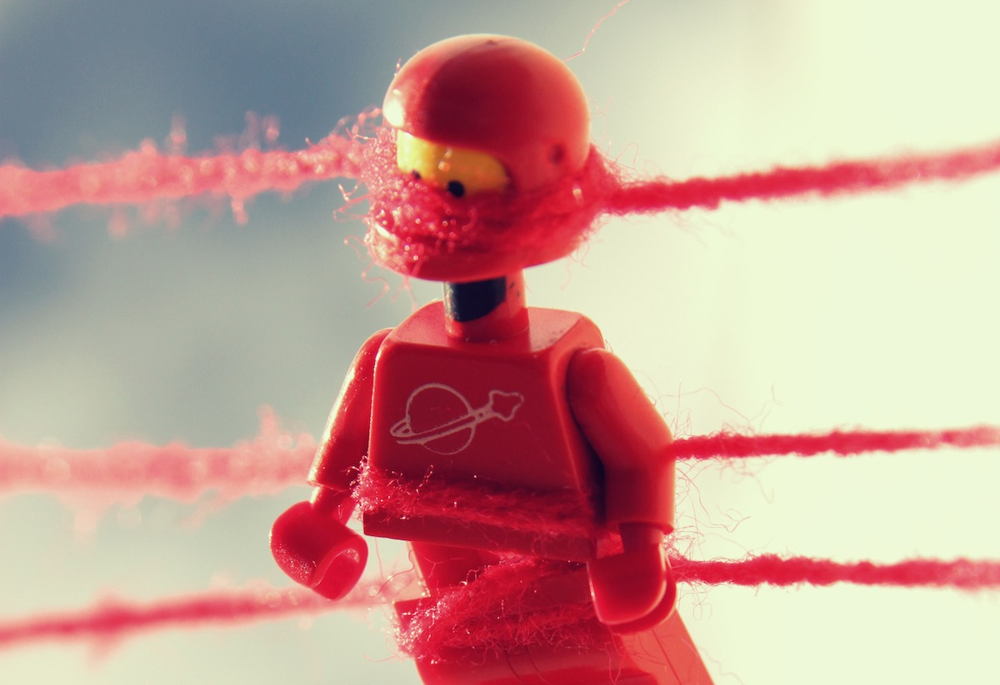

Creating a new websocket connection (and attempting to open that connection) is really, really easy:
var socket = new WebSocket('ws://echo.websocket.org/');And, your newly created websocket object will fire an open message when the connection is active:
socket.onopen = function() {
// ready for comms
};
Using websockets in a production environment is possible, but there are challenges.
var url = 'http://localhost:5984/presentations/_changes?feed=eventsource',
remoteEvents = new EventSource(url);
console.log(remoteEvents);